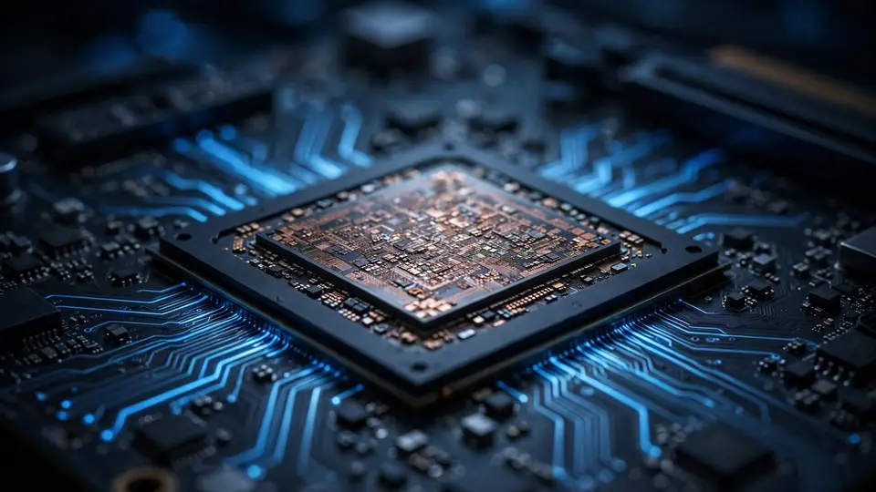

Encrypted AI compute goes on sale in Texas: Texas Inference opens founding reservations, bets businesses — not households — will foot the $3.7T buildout
Austin’s Texas Inference opened founding reservations today for encrypted AI compute — dedicated model lanes and B300 GPUs that keep data encrypted while it runs. Founder Cooper Scanlon is also making an economic case: the $3.7 trillion in annual revenue the AI buildout needs by 2032 will come from businesses reallocating wage budgets, not consumers.
Austin’s Texas Inference opened founding reservations today for encrypted AI compute — dedicated model lanes and B300 GPUs that keep data encrypted while it runs. Founder Cooper Scanlon is also making an economic case: the $3.7 trillion in annual revenue the AI buildout needs by 2032 will come from businesses reallocating wage budgets, not consumers.
An Austin startup called Texas Inference opened founding reservations today for a confidential AI compute service that keeps customer data encrypted while it runs — and founder Cooper Scanlon used the launch to weigh in on the decade’s defining economic question: who pays for the AI buildout. His answer: businesses, not households.
In a press release dated October 10, the company said customers can now reserve a dedicated lane running a frontier open-source model for teams of 25 to 100 people, or rent between one and eight encrypted NVIDIA B300 GPUs by the day, week, month, or quarter. The company’s site lists the lane model as Nemotron 3 Ultra, with founding-reservation deposits refundable in full until a customer goes live.
The $3.7 trillion question
Scanlon’s argument responds to “Financing the AI Buildout,” a paper by Columbia Business School professor Stijn Van Nieuwerburgh presented at the Brookings Papers on Economic Activity fall conference on September 25. The paper projects about $10.3 trillion in US AI infrastructure investment from 2025 to 2032 — an average of 3.63% of GDP per year, bigger relative to the economy than the railroad, highway, electrification, canal, or telecom buildouts, according to Brookings’ summary.
The number at the center of Scanlon’s case: to earn a 10% return on that investment, AI revenue would need to reach roughly $3.7 trillion a year by 2032, or about 9.2% of projected GDP. OpenAI and Anthropic together currently earn around $100 billion a year, the release notes — a gap of roughly 37× in six years.
“US consumers simply do not have this much extra money to spend,” Scanlon wrote. His math: a household version of the 9.2% figure would amount to about $11,000 per American every year, a share of GDP comparable to what the country spends on food.
Instead, he points at payrolls. Citing Bureau of Economic Analysis data, the release says business investment in computers and peripherals reached an annualized $325 billion in late 2025, up 75% from $186 billion in 2024, and that businesses have driven around three-quarters of computing spending. US employers paid about $16 trillion in wages and benefits at the end of 2025, per the release; with workers’ compensation holding near 52% of gross domestic income since 2022, a $40 trillion economy in 2032 would see a wage pool of around $21 trillion — making $3.7 trillion roughly 18% of it. The 9% figure, Scanlon wrote, is “most likely to be driven by businesses shifting employee spend to AI spend.”

Own your compute
The product pitch is confidentiality as infrastructure. Intel TDX encrypts the host machine’s memory, Blackwell hardware encrypts each GPU’s memory, NVLink traffic between GPUs is encrypted too, and customer data stays in Texas. The hardware signs a report for every session so customers can independently verify the protections.
Scanlon argues that as AI moves into the core operations of companies, they will want dedicated compute — both to protect sensitive data and to avoid enterprise software markups. The release cites Latham & Watkins, the second-largest US law firm, as an example of a company buying in-house GPU servers for those reasons.
One grain of salt: the announcement is a paid press release, and a company selling GPU capacity has every incentive to argue the buildout pays off. The $3.7 trillion arithmetic and the wage-pool figures are Scanlon’s reading of the Brookings paper, not independent reporting.
Why it matters
Even so, two real things happened today. First, a confidential-compute product is now on sale: teams that won’t touch shared AI infrastructure for compliance or security reasons can reserve a dedicated, attested lane — a niche that keeps growing as agents and assistants reach deeper into sensitive company data. Second, the financing question is moving from econ-paper threads into founder decks: Van Nieuwerburgh’s $10.3 trillion figure has been debated online for weeks, and vendors are now building products around whichever answer they favor.